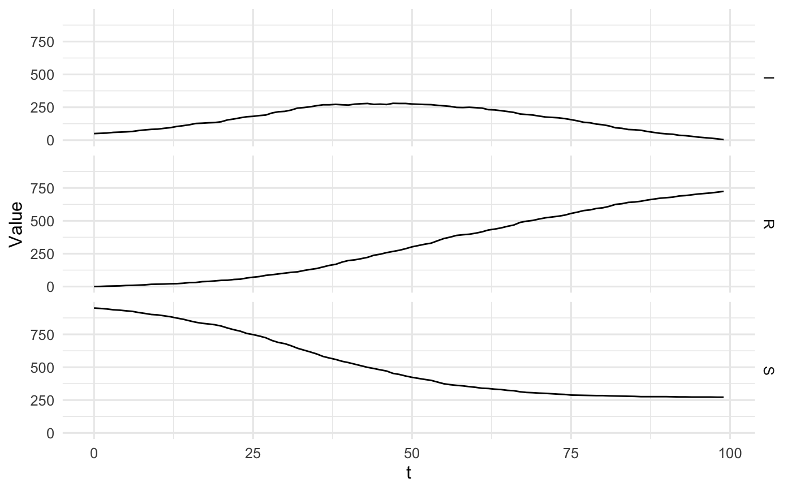
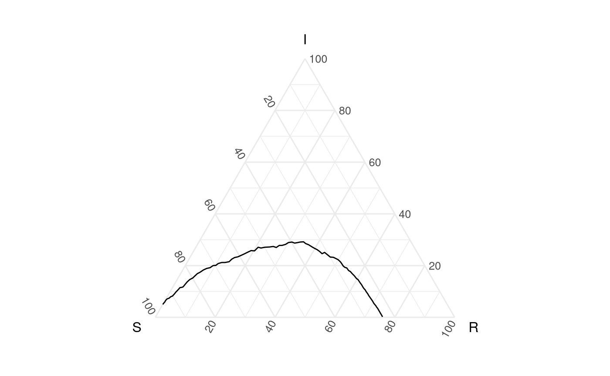
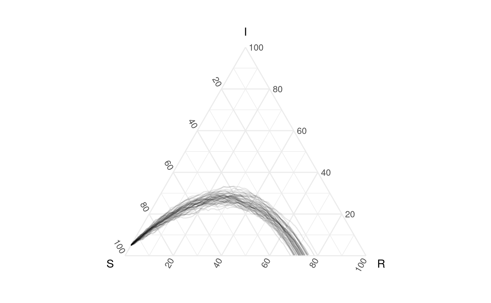

Getting started with EpiCompare
getting_started.Rmd
Installation
To install EpiCompare, run the folllowing code.
if(!require(EpiCompare)){
library(devtools)
devtools::install_github("skgallagher/EpiCompare")
}
library(EpiCompare)Quickstart
The following example comes from a Measles outbreak in Hagelloch, Germany in 1861. We have data on each child (agent) in the town.The data we use (as seen below) has each child’s information relative to when they were reported to be infected and recovered, information on their school class.
## Visualizing epidemic progression using EpiCompare
library(kableExtra)
EpiCompare::hagelloch_raw %>% head() %>%
select(PN, NAME, AGE, SEX,
tPRO, tERU, tI, tR) %>%
knitr::kable() %>%
kableExtra::kable_styling()| PN | NAME | AGE | SEX | tPRO | tERU | tI | tR |
|---|---|---|---|---|---|---|---|
| 1 | Mueller | 7 | female | 22.71242 | 26.22541 | 21.71242 | 29.22541 |
| 2 | Mueller | 6 | female | 24.21169 | 28.79112 | 23.21169 | 31.79112 |
| 3 | Mueller | 4 | female | 29.59102 | 33.69121 | 28.59102 | 36.69121 |
| 4 | Seibold | 13 | male | 28.11698 | 29.02866 | 27.11698 | 32.02866 |
| 5 | Motzer | 8 | female | 23.05953 | 28.41510 | 22.05953 | 31.41510 |
| 6 | Motzer | 12 | male | 27.95444 | 30.23918 | 26.95444 | 33.23918 |
To understand to epidemic we can examine it through an “aggregate” lense (using geom_aggregate), which aggregates the groups to find the number of susceptible, infectious, and recovered, and plots them in the ternary view.
theme_set(theme_minimal())
hagelloch_raw %>%
ggplot(aes(y = tI, z = tR)) +
geom_aggregate() +
coord_tern() +
labs(x = "S", y = "I", z = "R", title = "Town analysis")
Previous work has suggested that the class (CL) the student was in effected how the experienced the outbreak. The below figure shows differences in the outbreak relative to this grouping.
hagelloch_raw %>%
rename(`school grade` = CL) %>%
group_by(`school grade`) %>%
summarize(`number of students` = n()) %>%
knitr::kable() %>%
kableExtra::kable_styling()| school grade | number of students |
|---|---|
| preschool | 90 |
| 1st class | 30 |
| 2nd class | 68 |
hagelloch_raw %>%
ggplot(aes(y = tI, z = tR, color = CL)) +
geom_aggregate() +
coord_tern() +
labs(x = "S", y = "I", z = "R",
color = "School grade",
title = "Town analysis by grade") +
scale_color_brewer(type = "qual")
Simulating epidemics with simulate_SIR_agents.
The below code simulates SIR data at the individual (or agent) level, aggregates it into SIR format, and plots it in the ``standard’’ view of percent in state vs. time.
n_sims <- 1
n_time_steps <- 100
beta <- .1
gamma <- .03
init_SIR <- c(950, 50, 0)
out <- EpiCompare::simulate_SIR_agents(n_sims = n_sims,
n_time_steps = n_time_steps,
beta = beta, gamma = gamma,
init_SIR = init_SIR)
df_ave <- out %>% agents_to_aggregate(states = c(tI, tR)) %>%
rename(S = "X0", I = "X1", R = "X2") %>%
group_by(t) %>% summarize(S = mean(S), I = mean(I), R = mean(R))
if (tidyr_new_interface()){ # if tidyr version > 0.8.99
df_ave_lines <- df_ave %>% pivot_longer(names_to = "State",
values_to = "Value",
cols = c(S, I, R))
} else {
df_ave_lines <- df_ave %>% gather(key = "State", value = "Value",
S, I, R)
}
ggplot(data = df_ave_lines,
aes(x = t, y = Value, group = State, col = State)) +
geom_line()
ggplot(data = df_ave_lines,
aes(x = t, y = Value)) +
facet_grid(State ~ .) +
geom_line() 
We visualize this simulation with a single line in the following way.
ggplot(data = df_ave, aes(x = S, y = I, z = R)) + geom_path() +
coord_tern()
Simulating and visualizing multiple epidemics
We can also simulation multiple epidemics with different parameters (and can also examine simulations from both pomp and epiModels packages).
Using the same simulation parameters above we can simulate 50 epidemics:
n_sims <- 50 # only code changed
n_time_steps <- 100
beta <- .1
gamma <- .03
init_SIR <- c(950, 50, 0)
out <- EpiCompare::simulate_SIR_agents(n_sims = n_sims,
n_time_steps = n_time_steps,
beta = beta, gamma = gamma,
init_SIR = init_SIR)
We then use the agents_to_aggregate function to do the same thing (note that it preforms different for grouped_dfs and standard data.frames - as it’s a method):
df_group <- out %>% group_by(sim) %>%
agents_to_aggregate(states = c("tI", "tR")) %>%
rename(S = "X0", I = "X1", R = "X2")
ggplot(df_group, aes(x = S, y = I, z = R, group = sim)) +
geom_path(alpha = .1) +
coord_tern()
What’s more if we want to compare the original simulation with these new simulations (and see how well they match) we can do the following:
ggplot() +
geom_path(data = df_ave, aes(x = S, y = I, z = R)) +
geom_path(data = df_group, aes(x = S, y = I, z = R, group = sim),
alpha = .1) +
coord_tern()
#> Warning: Ignoring unknown aesthetics: z
#> Warning: Ignoring unknown aesthetics: zHow extreme is the first simulation compared to the rest? Let’s create a empirical 95% prediction band from the later simulations.
ggplot() +
geom_prediction_band(data = df_group,
aes(x = S, y = I, z = R,
sim_group = as.numeric(as.character(sim))),
fill = "blue", color = NA, alpha = .2,
conf_level = .05, grid_size = rep(100, 2),
pb_type = "delta_ball"
) +
geom_path(data = df_ave, aes(x = S, y = I, z = R)) +
coord_tern()
#> Warning: Ignoring unknown aesthetics: z
Here’s a demo of all current prediction bands:
vis_data <- EpiCompare::pomp_df %>%
rename(x = "S", y = "I", z = "R") %>%
ggplot(aes(x = x, y =y, z = z, group = .id)) +
geom_path(alpha = .03) +
coord_tern() +
labs(title = "Actually data paths")
vis_spherical <- EpiCompare::pomp_df %>%
rename(x = "S", y = "I", z = "R", t = "time") %>%
ggplot(aes(x = x, y = y, z = z, t = t)) +
geom_prediction_band(pb_type = "spherical_ball",
grid_size = rep(100,2),
conf_level = .95) +
coord_tern() +
labs(title = "Spherical CB")
vis_delta_ball <- EpiCompare::pomp_df %>%
rename(x = "S", y = "I", z = "R") %>%
mutate(.id = as.numeric(.id)) %>%
ggplot(aes(x = x, y = y, z = z, sim_group = .id)) +
geom_prediction_band(pb_type = "delta_ball",
grid_size = rep(100,2),
conf_level = .95) +
coord_tern() +
labs(title = "Delta-ball CB")
vis_kde <- EpiCompare::pomp_df %>%
rename(x = "S", y = "I", z = "R") %>%
mutate(.id = as.numeric(.id)) %>%
ggplot(aes(x = x, y = y, z = z, sim_group = .id)) +
geom_prediction_band(pb_type = "kde",
grid_size = rep(100,2),
conf_level = .95) +
coord_tern() +
labs(title = "KDE CB")
vis_convex_hull <- EpiCompare::pomp_df %>%
rename(x = "S", y = "I", z = "R") %>%
mutate(.id = as.numeric(.id)) %>%
ggplot(aes(x = x, y = y, z = z, sim_group = .id)) +
geom_prediction_band(pb_type = "convex_hull",
conf_level = .95) +
coord_tern() +
labs(title = "Convex hull CB")
grid.arrange(vis_data, vis_spherical,
vis_delta_ball, vis_kde,
vis_convex_hull, nrow = 2)